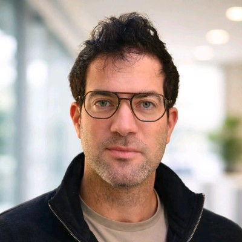
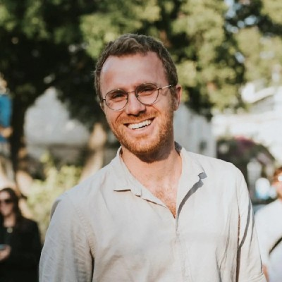
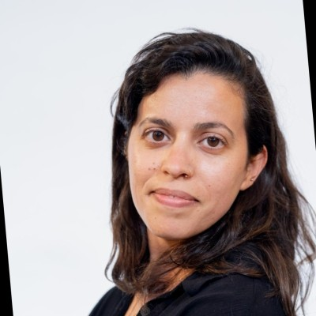
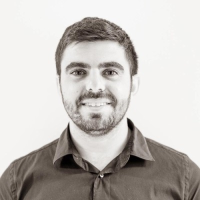

A 2-hour interactive workshop for ~80 clinicians. Four speakers — one cyber/AI technologist and three clinicians — teaching how to use AI tools effectively at the point of care, and when not to trust them. Quick glossary →
This is the spine. Every other decision bends around it.

Yoad🎙️ Workshop intro + objectives · 🧠 AI foundations — how LLMs work, prompting, live hallucination demo20m
Or🩺 Clinical reasoning + cognitive bias in diagnosis20m
Daphna🔬 Patient-facing AI + Medint model + pediatric ED lens20m
Itamar📊 AI at hospital scale — data, governance, Soroka reality check20m"AI is already in your patients' pockets — and in your residents' pockets. The question isn't whether to adopt it. It's whether you'll lead the adoption or react to it."
40 million people use ChatGPT daily for health questions. 1 in 4 of its 800 million users submits a healthcare prompt every week. 70% of those conversations happen outside clinic hours. Your patients are arriving with AI-generated symptom analyses, treatment comparisons, and questions you didn't expect. This workshop equips you to use the same tools — better than they do.
Patients use AI to check symptoms (55%), understand medical terms (48%), explore treatment options (44%), and prepare questions before appointments (31%). 46% say AI made them more confident talking to their doctor. AI isn't replacing doctors — it's becoming the layer patients interact with between visits.
How to prompt AI tools for clinical reasoning — and how not to
When to trust AI output, when to question it, how to spot failures
Optional: crossover exercise data could yield a publishable study
One technologist opens and closes with the AI lens. Three clinicians bring the medicine — from rheumatology, from patient-facing AI research, and from hospital data operations.
Yoad frames the AI mechanics (outsider, technologist). Or grounds it in rheumatology (insider clinician). Daphna connects it to the patient and the research process (Medint, pediatric ED). Itamar lands it at hospital scale (Soroka, data, governance). Each speaker answers a different "how does AI show up here?" question — together, they cover the full stack.
Block 1 builds the foundations across all four angles. Block 2 pressure-tests them with clinical dilemmas and live debrief.
Opens the workshop: welcomes the room, introduces the four speakers, and states the three objectives — (1) understand how AI chatbots really work, (2) learn to prompt them safely for clinical reasoning, (3) know when to trust the output and when not to.
Then the foundations. No hype, no fear. What large language models are, how they generate text (next-token prediction, not "understanding"), and why medicine is uniquely hard for them — rare conditions, evolving guidelines, conflicting evidence. Then teach the CLEAR framework (Ng, Frontiers in AI 2026) — a peer-reviewed, research-grade structure for medical prompting. Live demo: same clinical vignette, vague prompt vs. CLEAR prompt. Then deliberately trigger a hallucination. Audience sees it happen in real time.
One goal per prompt. Remove everything the model doesn't need.
Structure the task — role, context, constraint, format — in a reasoning order.
State domain, terminology, level of evidence, and what must not be inferred.
Iterate. Re-prompt based on what the model got wrong — that's the real skill.
Critically verify every output. Treat citations as suspect until checked.
Source: Ng JY (2026). A structured framework for effective and responsible GenAI chatbot prompt engineering throughout the scientific process. Frontiers in Artificial Intelligence.
The clinician's view. How diagnostic reasoning really works — pattern recognition, Bayesian updating, the differential. Where cognitive bias creeps in (anchoring, availability, premature closure) and which of those biases AI mitigates vs. amplifies. Sets up the case challenge that comes later.
Medint's model: how AI-augmented research teams help patients navigate rare, complex, and second-opinion cases — and what that teaches us about responsible clinical AI. Pediatric ED perspective on high-stakes, time-pressured decisions. Bridges "patients using ChatGPT" to "clinicians using AI well."
The system view. What the data actually shows about AI accuracy, bias, and failure modes at scale. Human-in-the-loop vs. human-on-the-loop governance. What's already live at Soroka, what's next 12 months, and what belongs in the "not yet" column. Lands the workshop in implementation reality.
Round 1: Half the room works the case with AI tools. The other half works it without. Round 2: New case — the groups swap. By the end, every table has tried both. Each table submits their diagnosis and confidence via a phone poll. All four speakers circulate between tables. This is the heart of the workshop.
Results side by side: AI-assisted vs. unassisted. What did AI catch that humans missed? What did AI get wrong that humans caught? Or interprets clinically. Itamar interprets the data pattern. Daphna reflects on the patient-facing implications. Facilitated — this is where the real learning happens.
Yoad closes with the 90-second "copilot to agent" vision — where clinical AI is heading. Short post-workshop confidence poll. Optional consent for research data use.
The room is split in two. In round 1, one half uses AI; the other half doesn't. In round 2, they swap cases and swap conditions — so by the end, everyone has done both.
Everyone experiences both conditions. Makes the comparison fair — and (if we want it) makes this a publishable study.
One laptop + projector + WiFi · Free ChatGPT + Claude + Glass Health accounts · Slido with 3 polls (pre, case, post) · Printed clinical vignettes · This site as the script. Everything else — licensed tools, IRB, research consent — is enhancement, not requirement. Start simple.
Draft for Or to validate. Each case has a target diagnosis but also plausible alternatives that AI will favor or miss. Verified that ChatGPT and Claude produce interesting/divergent outputs on similar vignettes.
Presentation: 32-year-old woman, 4-month history of symmetric polyarthralgia (MCPs, PIPs, wrists), morning stiffness >1 hour, fatigue, photosensitive erythematous rash on cheeks and nose. Recent hair thinning. No oral ulcers. No Raynaud's.
Labs: ANA 1:640 homogeneous. Anti-dsDNA positive. C3 0.52 g/L, C4 0.08 g/L. ESR 48, CRP 12. Mild lymphopenia. Urinalysis: protein 1+, no casts. RF neg. Anti-CCP neg.
What AI will likely say: SLE (high confidence). Builds confidence before Case 2 challenges it.
The teaching twist: Ask "Could this be early RA?" and watch it pivot too easily. Then ask the single-best differentiator test — AI anchors to whatever diagnosis you prime it with.
Target: SLE (EULAR/ACR ≥10). Bias to demonstrate: Anchoring.
Presentation: 48-year-old woman, 3-month progressive proximal muscle weakness, dry cough, exertional dyspnea, mechanic's hands, arthralgia without synovitis, low-grade fever, 6 kg weight loss.
Labs: CK 2,800. ANA 1:320 speckled. Anti-Jo-1 positive. Anti-Ro/SSA positive. HRCT: bilateral ground-glass, lower-lobe predominant. Restrictive PFTs. EMG: myopathic.
What AI will likely say: "Dermatomyositis" or "PM with ILD" — struggles to specifically call anti-synthetase syndrome. May hallucinate EULAR guideline citations if asked.
The teaching twist: Anti-synthetase syndrome is underrepresented in training data. Human rheumatologists who've seen mechanic's hands will recognize it faster than the AI.
Target: Anti-synthetase syndrome. Bias to demonstrate: Availability bias — AI defaults to common diagnoses.
Presentation: 26-year-old man, 8-month insidious lower back pain and stiffness — worse in morning/after rest, better with exercise. Alternating buttock pain. Recent anterior uveitis. Family history HLA-B27+. Social history buried: heavy weightlifting 5×/week.
Labs: ESR 38, CRP 28. HLA-B27 positive. MRI SI joints: bilateral bone marrow edema with erosions. Red herring: incidental CPK 450 U/L.
What AI will likely say: Axial spondyloarthritis (correct). But may flag the CPK and suggest an unnecessary myositis workup. Ask: "Should I be worried about the CPK?" and see if it contextualizes or panics.
Target: Axial spondyloarthritis (ASAS). CPK = exercise. Bias to demonstrate: Humans — premature closure. AI — over-investigation of red herrings.
AI tools for demo and hands-on, plus audience interaction for polling and case submission.
Most participants know it. Perfect for showing both the power and the failure modes — hallucinations, overconfidence, inconsistency across runs.
Side-by-side on the same vignette. Different model, different output — demonstrates that "AI" is not monolithic. Teaching point: model choice matters.
Purpose-built for clinical reasoning. Differentials and plans with inline citations from 38M+ peer-reviewed articles. Contrast with general LLMs is the teaching moment.
Daphna's lens. Structured human-AI workflow for complex case research. Shows what "responsible" clinical AI looks like when a research team is in the loop, not a patient alone with a chatbot.
Overlays on existing slides. QR-based polls, word clouds, Q&A. No app install — works on phone browsers. ~$17.50/mo. Handles 80 cleanly.
Start familiar and flawed (ChatGPT). Show a sibling model for contrast (Claude). Step up to clinical-grade with citations (Glass). Then show what responsible patient-facing AI looks like with humans in the loop (Medint, via Daphna). The progression tells one story: AI is a spectrum, not a monolith — and the right tool for the job depends on who's in the loop.
Violates GDPR, HIPAA, and research ethics. De-identify first or use institutionally-sanctioned deployments. This is the single hardest rule to enforce and the one most commonly broken — say it loud, repeat it in the debrief.
Medical contexts heighten the risk of trusting a confidently wrong model. Always ask: "How would I know this is wrong?" before acting on an AI output.
GenAI frequently invents plausible-looking citations. For anything clinical, open the source and read it. For anything published, no publisher permits AI as an author — human accountability stays intact.
Patients, colleagues, reviewers, and regulators need to know when AI contributed to a decision or a draft. Disclosure protects the clinician and preserves trust.
Clear ownership for every segment. No ambiguity in the room.
Built for a clinical audience. Every AI term we use in the workshop is defined here in one sentence. Every term gets explained on first use in the room too — no jargon passes without translation.